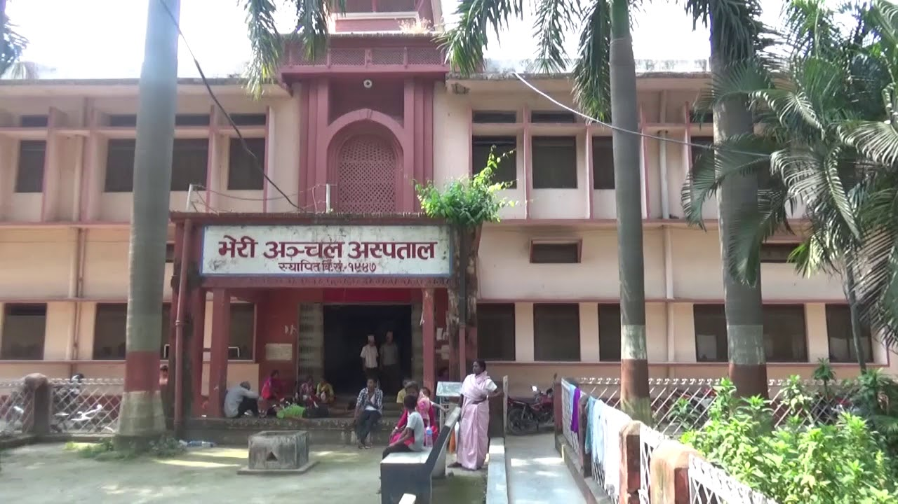

Bheri Hospital is the major referral center with specialties services for Province No 5, Karnali Privince & Sudur Pachhim Province of the country(NEPAL) Bheri Hospital is the major referral center with specialties services for Province No 5, Karnali Privince & Sudur Pachhim Province of the country(NEPAL)
Bheri Hospital lab begins coronavirus test
Bheri Hospital in Nepalgunj has begun testing coronavirus today with the installation of real timer polymer chain reaction (RTPCR) machine on Saturday. Officiating chief of the Hospital Dr Pakash Thapa informed that although the test was begun on Saturday itself, the sample collection for test in RTPCR machine began today. For the installation and test, a team from the National Public Health Laboratory, Kathmandu, had arrived in Nepalgunj on Friday. The team had brought the reagent chemical. The reagent chemical needed for blood test was brought from Kathmandu as it was not available here. The corona test laboratory was set up at Bheri Hospital targeting the test on the people from Banke and Bardiya districts. With the operation of the laboratory here, the compulsion to send samples to Bhairahawa and Kathmandu for test has ended. Some 100 sample tests can be conducted with RTPCR machine in a day, according to Dr Thapa. Among the COVID-19 suspected kept in different hospitals in Banke, 14 persons were tested negative on Saturday. Till Saturday, a total of 496 persons were tested negative in the district. Throat swab from eight persons was collected on Saturday in the district.
corona cases in Bheri Hospital
Among them, 16 are being treated at Bheri Hospital, Nepalgunj, and seven are under treatment at Teaching Hospital Kohalpur, said Naresh Shrestha, resource person at the District.
{kind=link}
news
Fifty-two individuals are receiving treatment in Bheri Hospital's isolation ward and 34 are being treated at Teaching Hospital Kohalpur. Among them, 23 are serious, 41 are in moderate health condition. Bheri Hospital's isolation ward